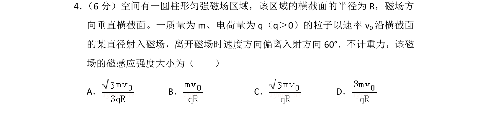
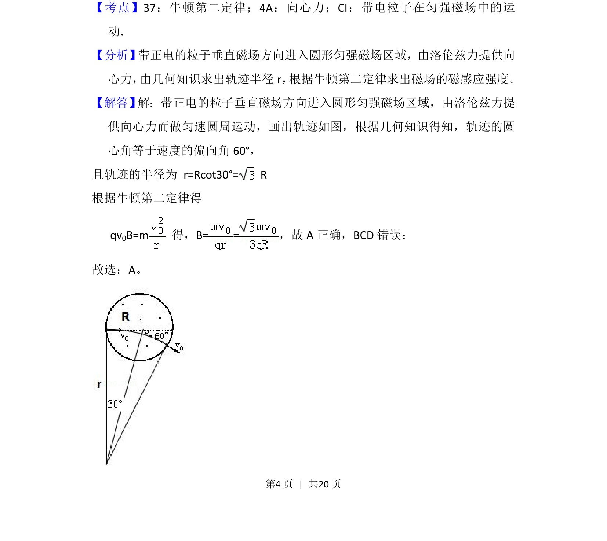

考点：带电粒子在匀强磁场中的运动 向心力 牛顿第二定律 几何关系

带电粒子垂直射入圆形匀强磁场，由几何关系和洛伦兹力提供向心力求解磁感应强度。

📄 原 PDF 第 4 页：
素材/真题/吉林/2008-2024·（吉林）物理高考真题/2013年高考物理试卷（新课标Ⅱ）（解析卷）.pdf
4． （6分）空间有一圆柱形匀强磁场区域，该区域的横截面的半径为R，磁场方 向垂直横截面。一质量为m、电荷量为q（q＞0）的粒子以速率v 0沿横截面 的某直径射入磁场，离开磁场时速度方向偏离入射方向60°．不计重力，该磁 场的磁感应强度大小为（ ） A．B．C．D．
【考点】37：牛顿第二定律；4A：向心力；CI：带电粒子在匀强磁场中的运 动．菁优网版权所有 【分析】 带正电的粒子垂直磁场方向进入圆形匀强磁场区域，由洛伦兹力提供向 心力， 由几何知识求出轨迹半径r， 根据牛顿第二定律求出磁场的磁感应强度。 【解答】 解：带正电的粒子垂直磁场方向进入圆形匀强磁场区域，由洛伦兹力提 供向心力而做匀速圆周运动，画出轨迹如图，根据几何知识得知，轨迹的圆 心角等于速度的偏向角60°， 且轨迹的半径为 r=Rcot30°= R 根据牛顿第二定律得 qv 0B=m 得，B= =，故A正确，BCD错误； 故选：A。